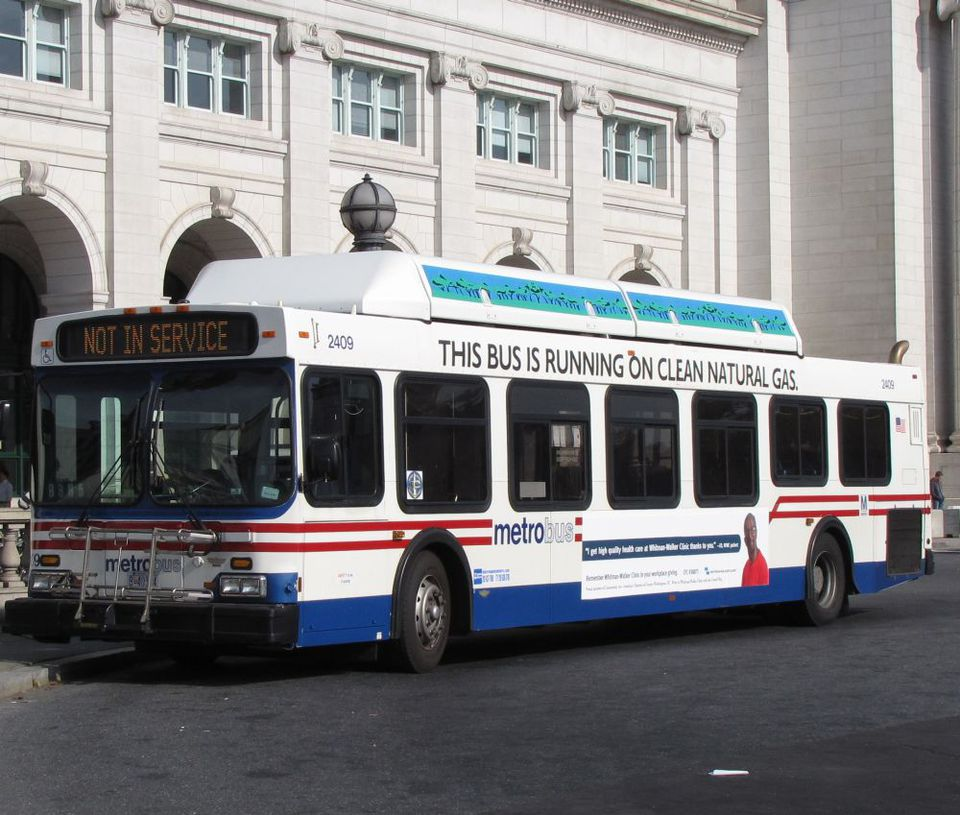
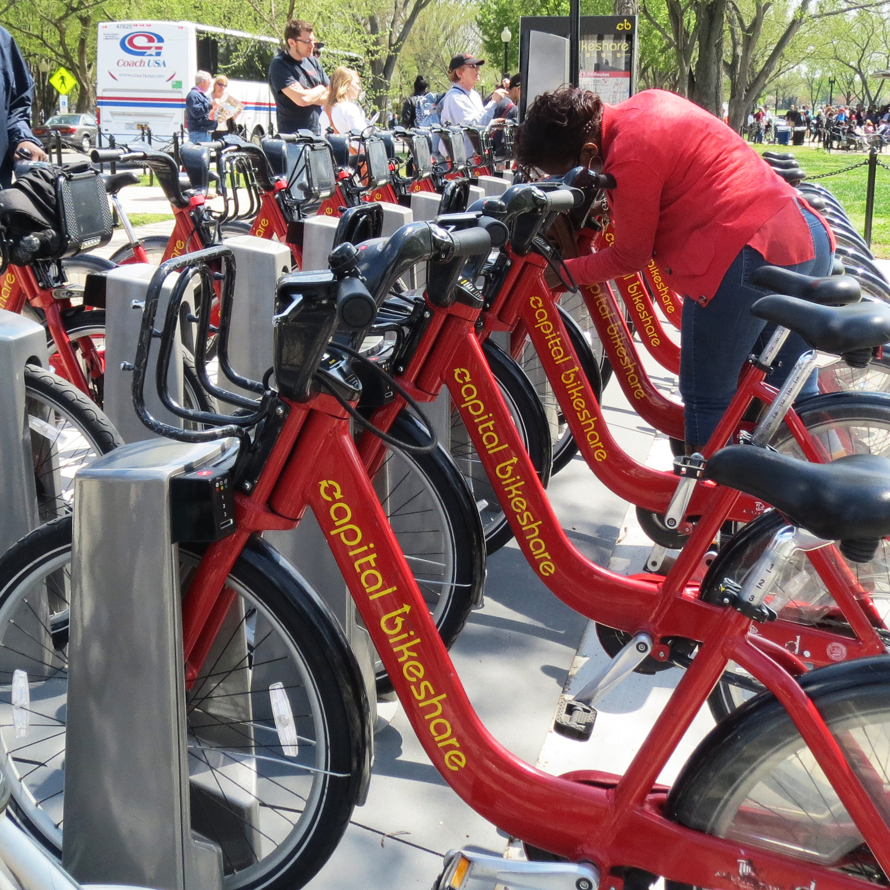
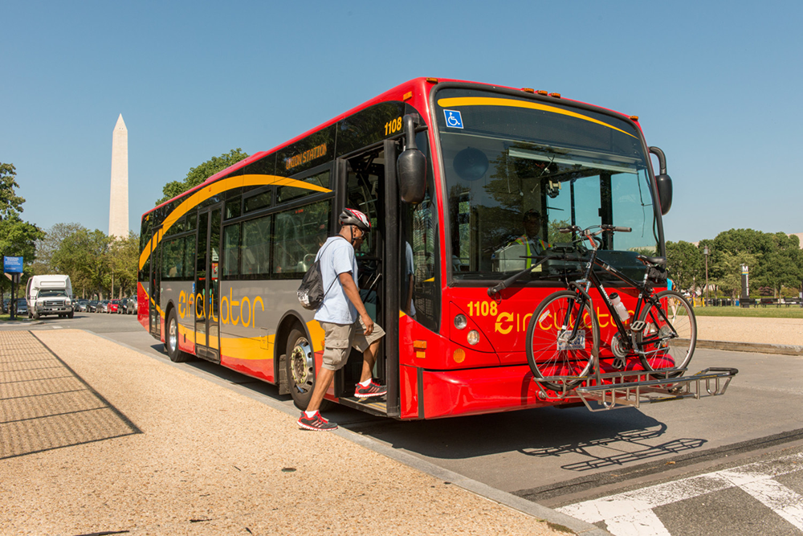

Transportation
Below are different methods of transportation in Washington, DC

Metro
Safest, cleanest and most efficient transportation systems in the world. Metro operates from 5 a.m. to midnight on weekdays and from 7 a.m. to midnight on weekends. Riders can pay by purchasing a SmarTrip card.

Biking
One of the easiest ways to get around is through walking and biking. There are several bike stations around D.C. that can provide rental bikes for transportation. The rentals are free for the first thirty minutes of usage and after that initial time there is an additional fee.

DC Circulator
Busses run every 10 minutes. Very affordable being only 1$ a ride. Designed for easy-on, easy-off access at points of interest throughout the District.
Tips for Safe Travel
- Remember to pass all pertinent travel information on to someone at home.
- Travel in a group.
- Do not travel in areas of which you are not familiar.
- Remember to take off your namebadge when you are not on conference property; however, you must keep your wristband on at ALL TIMES.
- Please prepare for all types of weather.
- Bring and WEAR sunscreen.
- Do not share hotel room numbers with other guests.
- Do not invite guests to your hotel room.
- Use social media responsibly when traveling. Keep locations and schedule details vague/general and/or private.
- Use the official BPA social media platforms to promote conference scheduled activities through re-tweets, re-posts and shares.
- Review the Risk Management Plan found in your Conference Program onsite.
- Use ground transportation and tour activities scheduled and recommended by Business Professionals of America.
Chance Shelby, Austin Douglas and David Hernandez